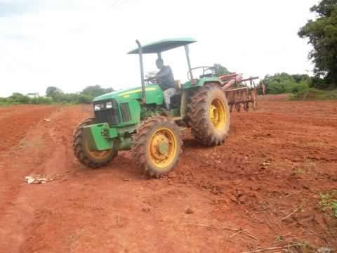
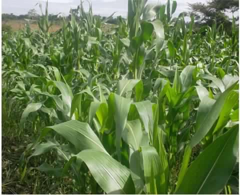
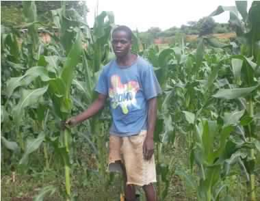
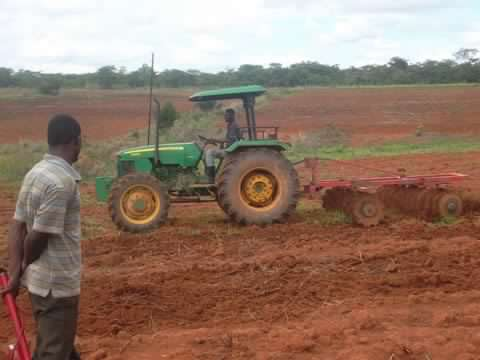

AGRICULTURE
L’introduction à l’agriculture moderne pour renforcer la production et la sécurité alimentaire, introduire l’irrigation agricole car celle-ci demeure la priorité des priorités.

Nous avons songé mettre sur pied ce projet pour permettre l’augmentation de la production agricole qui comporte trois volets :
Le 1er volet va appliquer l’alternance dans les technologies de gesticides et herlicides. D’où, il faut noter que toutes les cultures à base des persticides ont des répercussions néfastes sur la santé d’autant plus que le temps de la récolte n’est pas respecté et soulevons que celui qui vend un tel produit n’est pas forcement le consommateur.

Nous allons au moyen de ce projet augmenter la production en encourageant l’efficacité des fertilisants naturels entre autres : fumiers à base des feuilles mortes qui se décomposent et produisent une sorte de persticide et herbicide naturels qui ne peuvent pas nuire aux récoltes et à la santé car, la lutte contre la toxification de la récolte c’est notre soubassement.

Prenons l’exemple de deux de province du Kasaï, il y a plus de 55% de la population qui vit en milieu rural. Pour la population de ce terroir, les meilleures récoltes coûtent très cher pour pouvoir manger à sa faim, se soigner ou payer la scolarisation des enfants. Pour subvenir aux besoins des agriculteurs, la SODERCO prône pour une agriculture respectueuse de l’environnement par la réalisation et l’équipement de périmètres maraîchers irrigués. L’amélioration de systèmes de stockage et des filières de commercialisions sont d’une importance extrême, mais également l’utilisation raisonnable des produits phytoxanit ou la promotion des engrais biologiques couvre toutes les actions de la thématique « agriculture ».
Tout le monde dépend de la Terre pour survivre
L’objectif de la SODERCO SARL dans le secteur de l’agriculture est d’assurer la sécurité alimentaire des Congolais et de contribuer à la réduction de la pauvreté. Dans ce contexte nous allons mettre en place la politique agricole visant à permettre à la population de se prendre en charge, de produire suffisamment pour s’assurer une alimentation équilibrée en qualité et en quantité et ainsi améliorer les paramètres de l’indice du développement humain (IDH)
Panorama de l’agriculture
En ce qui nous concerne, le secteur agricole est d’une importance capitale et mérite un investissement sérieux dont les visées reposent sur :
§ La Population agricole cible
§ L’Exploitation agricole
§ L’agriculture dans l’économie
§ La Politique agricole commune
§ L’Organisation de la profession
§ De la production à la consommation
Les changements climatiques rendent plus difficile la survie de la semence dans d'autres villages similaires à travers la RDC. Des périodes de sécheresse plus longues que d'ordinaire compliquent surtout dans les carrières minières de plus en plus difficiles à la culture, qui est un aliment de base du régime alimentaire local.

Productions Végétales
La production végétale est diversifiée et concerne principalement les produits suivants :Maïs, Riz paddy , Manioc, Patate douce, Pomme de terre ,Arachide, Haricots, Banane plantain, palmier à huile, Oléagineuses, Voandzou, Petit pois, Pois cajan, Niébé, Igname, Millet, Pamplemousse, Mangues, Avocats, Ananas, Papayes, Sésame, Café, Cacao, Orange, Citrons, Thé
C'est pourquoi, l'objectif de SODERCO SARL est de permettre à chaque ménage d'avoir un accès durable à la nourriture quelle que soit la saison et les périodes de culture.
La SODERCO SARL compte avoir des matériels des nouvelles technologies pour renforcer son système d’exploitation agricole tel que les Tracteurs, Engins de Récolte.
Pour une Agriculture durable, il faut respecter les normes de l’environnement.
L’agriculture est en première ligne des actions en faveur de l’environnement et des paysages, des différents modes de production et de Bioénergies.